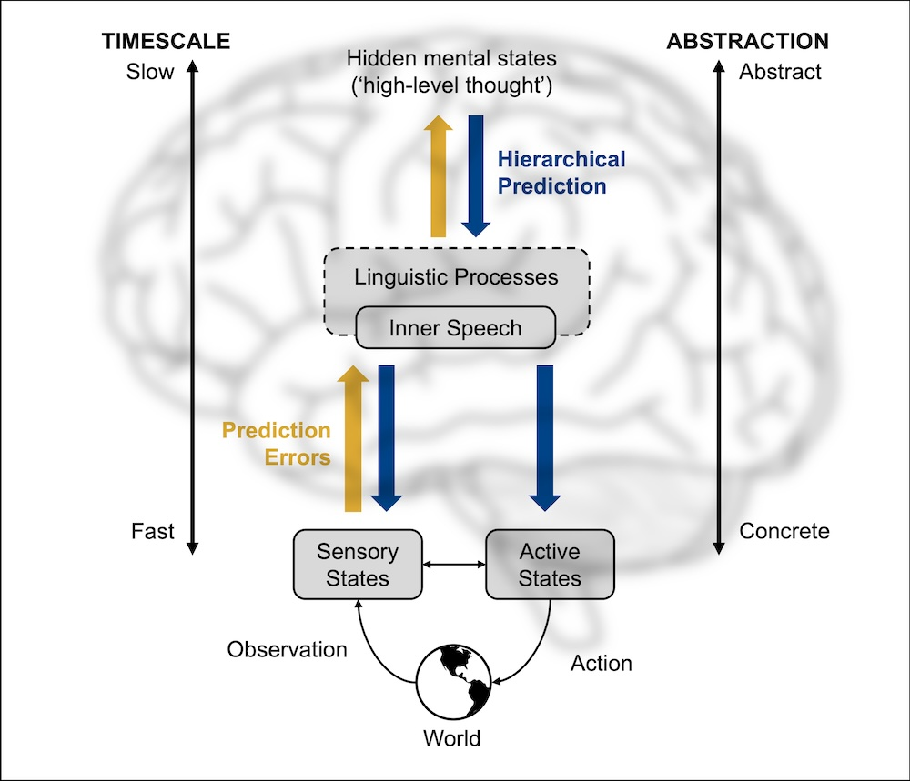
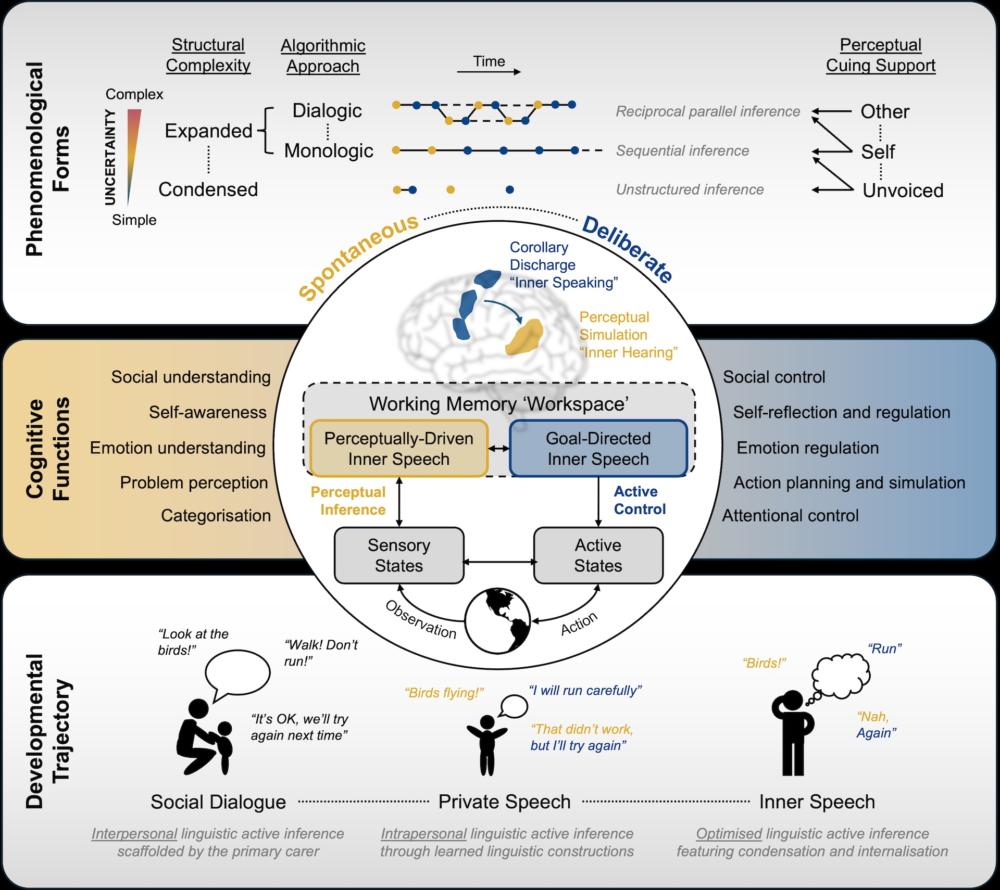

Rethinking inner speech through linguistic active inference

Why do we talk to ourselves in the head? I’ve spent years puzzling over this seemingly simple question.
Most of us talk to ourselves – that voice in your head narrating your thoughts, rehearsing conversations, working through problems. Vygotsky gave us a compelling story: social speech turns inward and becomes a tool for self-regulation and planning. But that tells us where inner speech comes from and what it does. It doesn’t quite answer why language is the format the brain reaches for. What makes words so effective for thinking?
I kept running into contradictions: inner speech helps us with some tasks but not others. It feels effortless sometimes, deliberate other times. Some people report almost constant inner dialogue, others barely any. What’s really going on?
My new paper in Psychological Review offers a potential answer – one that I’m rather excited about: inner speech helps our brains navigate uncertainty.
This is a hypothesis, a framework for thinking about the phenomenon, but it’s one that pulls together many disparate observations in a way that finally feels satisfying to me.

Here’s the idea: your brain is constantly trying to predict what’s happening and what to do next. But the world is complex and ambiguous. Inner speech acts like a translator – it converts messy, overwhelming sensory experiences into compact linguistic forms (e.g., “Mona Lisa”) that your brain can work with. And it works in reverse too: it unpacks your abstract goals (e.g., staying healthy) into concrete, actionable steps (e.g., “salad, not chips”).
Think of it like this: when you’re anxious about an upcoming presentation, talking yourself through it – “Okay, who am I speaking to? First I’ll introduce the problem like this, maybe through a metaphor, then show the data like this… if they ask about X, I’ll show them Y…” – this isn’t just rehearsal. You’re literally reducing uncertainty by transforming a fuzzy, anxiety-inducing future into a structured linguistic sequence your brain can predict and control.
This explains why inner speech is so dynamic – it adapts its form based on how uncertain you are and what kind of problem you’re trying to solve. When you’re confused, it becomes more explicit, deliberate, and likely dialogic. When things are clear, it shortens and fades into the background.
The framework generates concrete predictions about when inner speech should emerge, what forms it takes, and how it connects to everything from working memory to mental health challenges.

Read the full paper here: https://doi.org/10.1037/rev0000607
I’d love to hear your experiences – do you notice your inner voice changing depending on how uncertain or confused you feel?